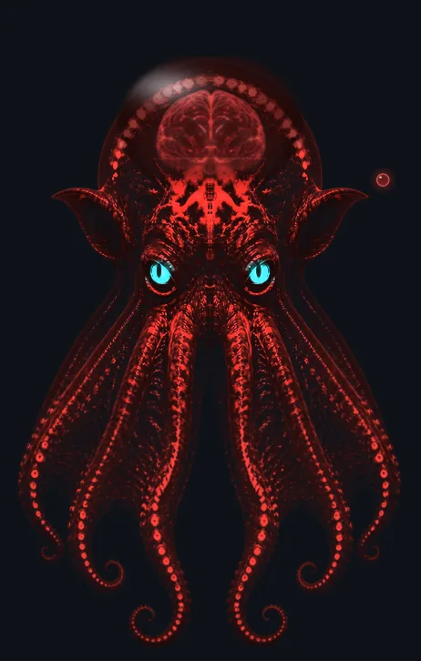
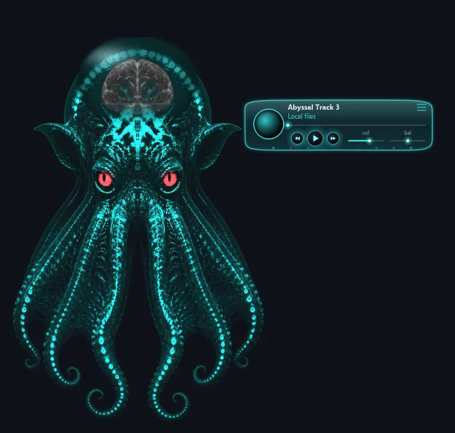
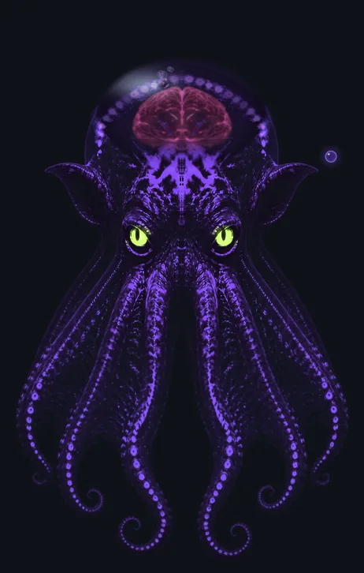

Octoplayer
A deep-sea alien octopus that floats on your desktop. Its body shifts from one solid glow to the next, its suckers ripple on every beat, and a floating bubble opens into the controls.




Features
- Smooth 60 fps animation with low CPU use (around 2% idle)
- Solid color glow that fades between hues, with contrasting eye colors
- Beat-reactive glow, head dots and sucker ripples; the body stays still
- Floating tentacles and a brain that drifts inside its glass head, with a subtle waveform
- Squishy, jiggly head when clicked
- A bubble by its ear that morphs into a translucent control panel with seek, volume, balance and playlist
- Sleeps when idle and wakes when music starts; optional UI sounds; always-on-top
System requirements
- Windows 10 or 11 (64-bit)
- Any recent CPU; a desktop with audio output
- About 200 MB of free disk space
Install
- Download the latest
.zipfrom the Releases page. - Right-click it, choose Extract All, and pick a folder.
- Open the folder and run
Octoplayer.exe. - If Windows SmartScreen appears, click More info then Run anyway.
Notes: builds are not code-signed yet, so Windows may warn you the first time. To uninstall, just delete the folder. Right-click Octoplayer for its menu.